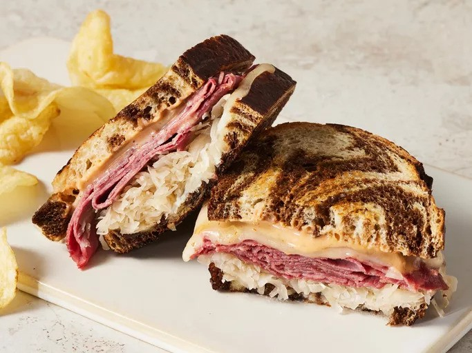

Reuben Sandwich

Description
The Reuben sandwich is a classic deli favorite that combines savory and tangy flavors in a satisfying grilled package. This sandwich features layers of tender, thinly sliced corned beef, melted Swiss cheese, and tangy sauerkraut, all piled between slices of rye bread spread with rich Thousand Island dressing. The sandwich is grilled to golden perfection, creating a crispy exterior that contrasts beautifully with the warm, gooey interior. Ready in just 20 minutes, this Reuben sandwich recipe is quick and easy to make, perfect for a hearty lunch or dinner. Serve it alongside dill pickles, potato chips, or a bowl of hot vegetable soup for a comforting and delicious meal that’s sure to please.
- 8 slices rye bread
- ½ cup Thousand Island dressing
- 8 slices Swiss cheese
- 8 slices deli sliced corned beef
- 1 cup sauerkraut, drained
- 2 tablespoons butter, softened
Steps
- Gather all ingredients and preheat a large griddle or skillet over medium heat.
- Spread one side of bread slices evenly with Thousand Island dressing.
- On four bread slices, layer one slice Swiss cheese, 2 slices corned beef, 1/4 cup sauerkraut, and a second slice of Swiss cheese. Top with remaining bread slices, dressing-side down. Butter the top of each sandwich.
- Place sandwiches, butter-side down on the preheated griddle; butter the top of each sandwich with remaining butter. Grill until both sides are golden brown, about 5 minutes per side.
- Serve hot. Enjoy!